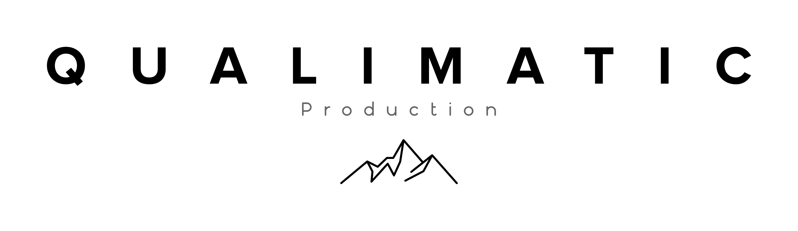

Élégance
2 650 €TTC
Des préparatifs à la première danse (9h → 1h). Cérémonie, séance couple éditoriale, plans drone selon la réglementation et la météo, film de 6 à 8 minutes.

Hôtels particuliers, châteaux d'Île-de-France — filmés par un vidéaste de la Loire, à moins de deux heures.
Mon atelier est en Vallée de la Loire, à Romorantin. Paris et l'Île-de-France sont à moins de deux heures, assez proche pour que le déplacement reste simple, assez loin pour que j'y arrive avec un regard qui n'est pas celui de la capitale.
Beaucoup de couples franciliens se marient d'ailleurs à deux pas de ma région : à Versailles, à Vaux-le-Vicomte, dans les grands domaines d'Île-de-France que je couvre déjà. Cette page rassemble l'essentiel pour un mariage à Paris et autour.
Paris, c'est d'abord la ville : hôtels particuliers, appartements haussmanniens, toits de zinc, quais de Seine à la tombée du jour. Un décor urbain, dense, qui demande de la discrétion et le sens du bon cadre au bon moment.
Et puis il y a la couronne. L'Île-de-France concentre certains des plus beaux châteaux de France : Versailles, Vaux-le-Vicomte, Chantilly, Fontainebleau, sans compter les domaines plus confidentiels des Yvelines et de Seine-et-Marne. De quoi composer un film ample, classique, sans jamais quitter la région.
En ville, ma méthode ne change pas mais elle se resserre : double caméra discrète, lumière travaillée, une attention constante à ce qui se passe autour. Paris a une lumière particulière — plus grise, plus douce que dans le Sud — qui rend très bien un mariage retenu et élégant.
Un point à connaître : Paris intra-muros est une zone d'interdiction de drone. Aucun survol n'y est possible. En Île-de-France hors zones restreintes, le vol reste soumis à autorisation, que je demande site par site — je suis télépilote certifié.
Depuis mon atelier de Romorantin, Paris est à environ 2h de route, ou par le train via Blois/Orléans. C'est une région que je rejoins facilement, et la formule Signature y est sans frais de déplacement, comme partout en France métropolitaine.
Mes deux formules s'appliquent partout. La formule Signature est sans frais de déplacement en France métropolitaine. En Élégance, les frais de déplacement sont annoncés en amont, au coût réel.
Des préparatifs à la première danse (9h → 1h). Cérémonie, séance couple éditoriale, plans drone selon la réglementation et la météo, film de 6 à 8 minutes.
Journée complète (9h → 1h). Cérémonie et discours en intégralité, plans drone selon la réglementation et la météo, film de 6 à 8 minutes, film long de 20 à 25 minutes, teaser sous 7 jours, livraison prioritaire sous 5 semaines, coffret USB personnalisé offert.